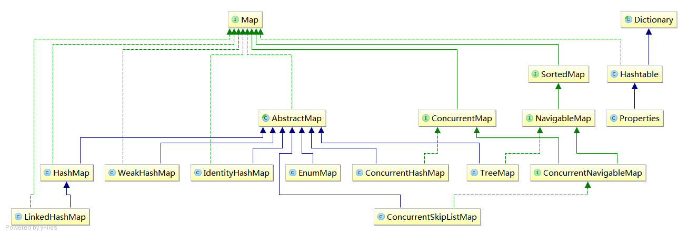

Map
Map：存放键值对的对象，不能包含重复的key，它定义了几类方法：
-
基本操作：比如put、get、remove、containsKey、containsValue、size、empty -
批量操作(bulk operations)：比如putAll、clear -
集合视图(collection views)：比如keySet、entrySet、values
Map的UML图： 
接口
SortedMap
SortedMap继承自Map，定义了关于 键(key) 的总体排序的方法。
NavigableMap
NavigableMap继承自SortedMap,定义了针对给定搜索目标返回最接近匹配项的导航方法。
ConcurrentMap
ConcurrentMap继承自Map，定义了线程安全和原子的方法
内存一致性效果：将对象放入ConcurrentMap之前的线程的操作happen-before随后通过另一线程从ConcurrentMap中访问或者移除该元素的操作。
ConcurrentNavigableMap
ConcurrentNavigableMap继承自Concurrent和NavigableMap
实现类
HashMap
HashMap基于哈希表(hash table)的Map接口实现，继承了AbstractMap类，允许使用null值和null键。
HashMap源码：
HashTable
HashTable也是基于哈希表(hash table)的Map接口实现，任何 非null 对象都可以用作键或值。
它和HashMap的区别在于它是 同步 的，而它还继承了Dictionary类（一个已经过时的类）
HashTable源码：
public synchronized V get(Object key) {
......
}
public synchronized V put(K key, V value) {
// 这里确保了value不能为null
if (value == null) {
throw new NullPointerException();
}
// Makes sure the key is not already in the hashtable.
Entry<?,?> tab[] = table;
// 这里如果key为null会抛出异常，所以key也不能为null
int hash = key.hashCode();
int index = (hash & 0x7FFFFFFF) % tab.length;
@SuppressWarnings("unchecked")
Entry<K,V> entry = (Entry<K,V>)tab[index];
for(; entry != null ; entry = entry.next) {
if ((entry.hash == hash) && entry.key.equals(key)) {
V old = entry.value;
entry.value = value;
return old;
}
}
addEntry(hash, key, value, index);
return null;
}
Properties
Properties继承自 HashTable ，它表示一个持久的属性集，可以保存在流中或者从流中加载。
属性列表的每个键、值都是字符串
一个属性列表可以包含另一个属性列表作为它的“默认值”；如果没有在原有属性列表中搜索到，则搜索第二个属性列表。
Properties源码：
//作为默认值
protected Properties defaults;
public Properties() {
this(null);
}
public Properties(Properties defaults) {
this.defaults = defaults;
}
//加了同步
public synchronized Object setProperty(String key, String value) {
return put(key, value);
}
//可以看到defaults的作用
public String getProperty(String key) {
Object oval = super.get(key);
String sval = (oval instanceof String) ? (String)oval : null;
return ((sval == null) && (defaults != null)) ? defaults.getProperty(key) : sval;
}
//也可以直接给出默认值
public String getProperty(String key, String defaultValue) {
String val = getProperty(key);
return (val == null) ? defaultValue : val;
}
LinkedHashMap
LinkedHashMap基于哈希表(hash table)和双向链表(doubly-linked)的Map接口实现，继承了HashMap类，具有可预知的迭代顺序。
LinkedHashMap提供特殊的构造函数，很适合构建 LRU缓存 。并且可以重写removeEldestEntry(Map.Entry)方法来自定义删除策略。
LinkedHashMap源码：
//可以出是双向链表
static class Entry<K,V> extends HashMap.Node<K,V> {
Entry<K,V> before, after;
Entry(int hash, K key, V value, Node<K,V> next) {
super(hash, key, value, next);
}
}
transient LinkedHashMap.Entry<K,V> head;
transient LinkedHashMap.Entry<K,V> tail;
//排列顺序（true时为按访问顺序，false时为按插入顺序）
final boolean accessOrder;
/**
* 重写了HashMap提供的一些钩子方法，来实现LinkedHashMap自己的特性
*/
// 在put操作时会被调用
Node<K,V> newNode(int hash, K key, V value, Node<K,V> e) {
LinkedHashMap.Entry<K,V> p =
new LinkedHashMap.Entry<K,V>(hash, key, value, e);
linkNodeLast(p);
return p;
}
void afterNodeInsertion(boolean evict) { // possibly remove eldest
LinkedHashMap.Entry<K,V> first;
if (evict && (first = head) != null && removeEldestEntry(first)) {
K key = first.key;
removeNode(hash(key), key, null, false, true);
}
}
void afterNodeAccess(Node<K,V> e) { // move node to last
LinkedHashMap.Entry<K,V> last;
if (accessOrder && (last = tail) != e) {
LinkedHashMap.Entry<K,V> p =
(LinkedHashMap.Entry<K,V>)e, b = p.before, a = p.after;
p.after = null;
if (b == null)
head = a;
else
b.after = a;
if (a != null)
a.before = b;
else
last = b;
if (last == null)
head = p;
else {
p.before = last;
last.after = p;
}
tail = p;
++modCount;
}
}
WeakHashMap
WeakHashMap基于哈希表(hash table)以弱键(weak keys)实现的Map接口，继承了AbstractMap，允许使用null值和null键。
既然敢叫weak，那我们看看源码它是怎么实现的：
// 可以看到它的Entry是继承了WeakReference
private static class Entry<K,V> extends WeakReference<Object> implements Map.Entry<K,V> {
V value;
final int hash;
Entry<K,V> next;
Entry(Object key, V value,
ReferenceQueue<Object> queue,
int hash, Entry<K,V> next) {
// 重点！！ 可以看到，key其实是个WeakReference，而value是普通对象StrongReference
super(key, queue);
this.value = value;
this.hash = hash;
this.next = next;
}
......
}
// 移除失效的Entry就靠这个方法了
private void expungeStaleEntries() {
// 就是执行ReferenceQueue中元素（也就是Key）的出队操作，然后将其对应的value置为null
for (Object x; (x = queue.poll()) != null; ) {
synchronized (queue) {
@SuppressWarnings("unchecked")
Entry<K,V> e = (Entry<K,V>) x;
int i = indexFor(e.hash, table.length);
Entry<K,V> prev = table[i];
Entry<K,V> p = prev;
while (p != null) {
Entry<K,V> next = p.next;
if (p == e) {
if (prev == e)
table[i] = next;
else
prev.next = next;
// Must not null out e.next;
// stale entries may be in use by a HashIterator
e.value = null; // Help GC
size--;
break;
}
prev = p;
p = next;
}
}
}
}
// 这个方法还有size、resize方法都调用了expungeStaleEntries（），而get、put等操作都会调用getTable或者size方法
private Entry<K,V>[] getTable() {
expungeStaleEntries();
return table;
}
我们知道WeakHashMap的特点是“当某个键不再正常使用时，将自动移除其条目”
实现该特点主要是因为Key这个WeakReference对象，而WeakReference的特点，使得Key不在被其他对象引用，并被GC回收时，同时放入queue中，当我们之后继续调用get等几乎所有方法是都要调用到expungeStaleEntries()方法，它会遍历queue，然后把value1进行清除。所以跟我们所想的自动清除还是有区别的，这里的自动清除还是需要自己触发的。
IdentityHashMap
IdentityHashMap基于哈希表(hash table)的Map接口实现，继承了AbstractMap接口，允许null值和null键。
它的特点是：用==代替了equals来判断key是否重复
IdentityHashMap源码：
public V put(K key, V value) {
Object k = maskNull(key);
Object[] tab = table;
int len = tab.length;
int i = hash(k, len);
Object item;
while ( (item = tab[i]) != null) {
/** 重点！ 它是直接判断的引用是否相等（这正是它的特殊之处），
* 而一般的如HashMap“(k = p.key) == key || (key != null && key.equals(k)))” 或者
* HashTable等都是“(entry.hash == hash) && entry.key.equals(key)”
* 简单来说，就是key的判断它用==代替了equals
*/
if (item == k) {
@SuppressWarnings("unchecked")
V oldValue = (V) tab[i + 1];
tab[i + 1] = value;
return oldValue;
}
i = nextKeyIndex(i, len);
}
modCount++;
tab[i] = k;
tab[i + 1] = value;
if (++size >= threshold)
resize(len); // len == 2 * current capacity.
return null;
}
EnumMap
EnumMap以Enum类型为Key的Map接口实现。
在enum那篇已经介绍了一下，这里主要放在源码上
EnumMap源码：
/**
* 因为Enum类型在构造时就可以确定，所以Map的大小，已经每个Key的索引也就确定了
*/
// Map中使用的Enum类型，
private final Class<K> keyType;
//key存在一个数组里
private transient K[] keyUniverse;
// 值存在一个数组里
private transient Object[] vals;
// map大小
private transient int size = 0;
public EnumMap(Class<K> keyType) {
this.keyType = keyType;
keyUniverse = getKeyUniverse(keyType);
vals = new Object[keyUniverse.length];
}
// 都是数组的索引操作
public V put(K key, V value) {
typeCheck(key);
int index = key.ordinal();
Object oldValue = vals[index];
vals[index] = maskNull(value);
if (oldValue == null)
size++;
return unmaskNull(oldValue);
}
虽然EnumMap的操作基本可以由HashMap替代，但是由于它的长度是固定的，而它的写也不会产生碰撞和resize操作，所以性能比HashMap要好很多。
ConcurrentHashMap
ConcurrentHashMap基于哈希表(hash table)实现的ConcurrentMap接口，继承了AbstractMap类，支持完全并发索引操作（get等）和可调节并发数的更新操作（put、remove等）。
由于不同版本的源码一直在变化，本来打算看JDK1.8的源码，但是变化太大（已经不适用segment的结构，由改为和HashMap同样的结构；更新操作内部也使用了synchronized），准备单开一篇，对比一下跟版本的变化，记录一下原理。
TreeMap
TreeMap基于红黑树(red black tree)实现的NavigableMap接口，继承了AbstractMap类，
TreeMap源码：
private final Comparator<? super K> comparator;
// 红黑树的根节点
private transient Entry<K,V> root = null;
// 红黑树的节点定义
static final class Entry<K,V> implements Map.Entry<K,V> {
K key;
V value;
Entry<K,V> left = null;
Entry<K,V> right = null;
Entry<K,V> parent;
boolean color = BLACK;
.....
}
ConcurrentSkipListMap
ConcurrentSkipListMap基于跳表(skip list)的ConcurrentNavigableMap实现
日期：2014-05-22、2014-05-26、2014-05-29
参考资料：WeakHashMap的神话、.html